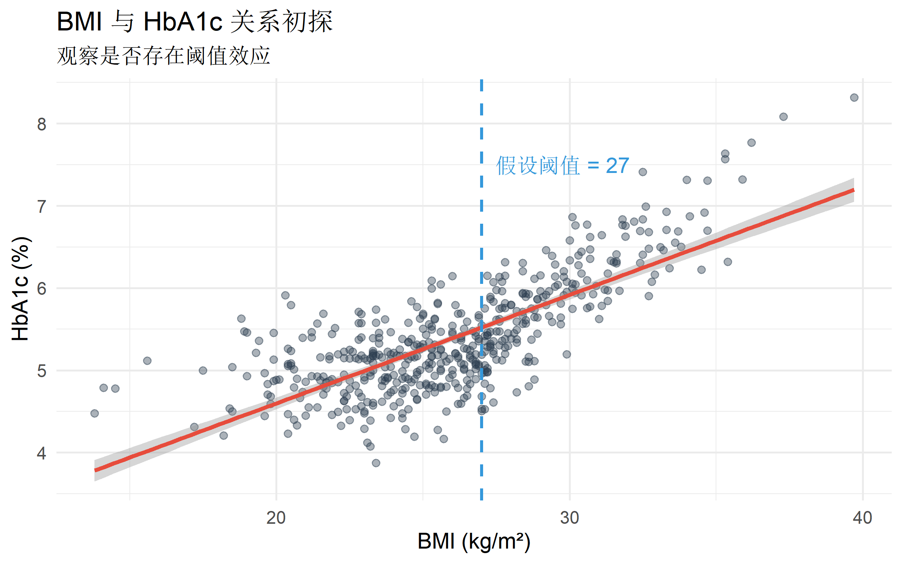
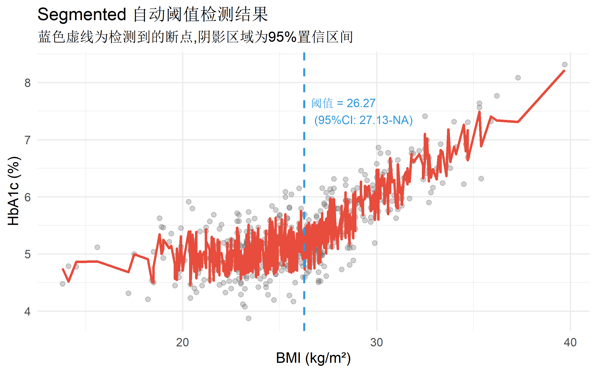
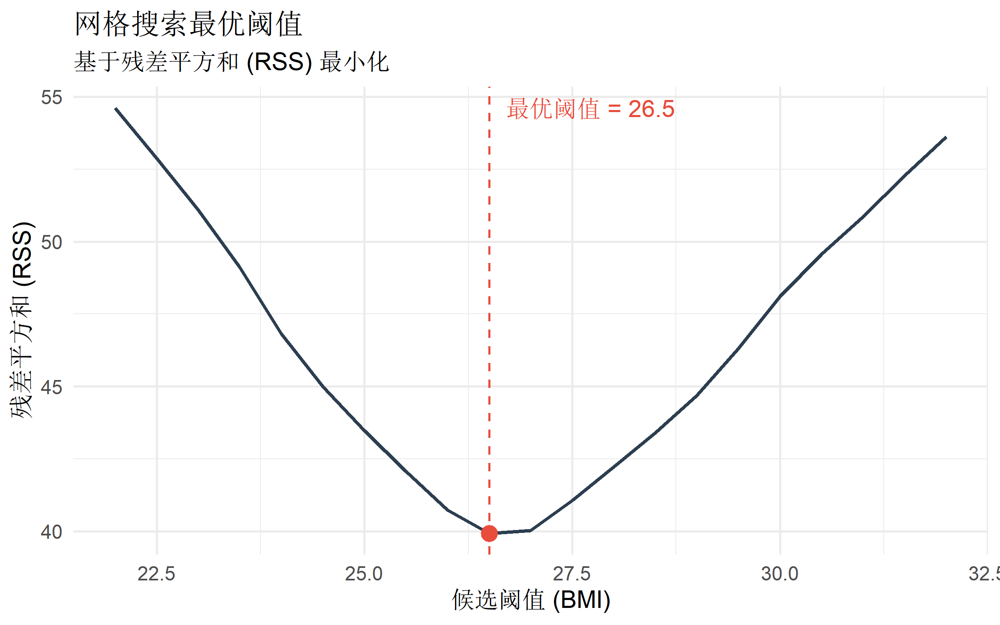

# 核心包
library(tidyverse) # 数据处理
library(segmented) # 自动阈值检测
library(strucchange) # 结构变化检验 (Chow test)
library(ggplot2) # 可视化
library(patchwork) # 图形组合
# 辅助包
library(broom) # 模型整理
library(gtsummary) # 表格生成统计分析方法
从基础回归到因果推断，系统掌握核心统计方法
统计分析方法
基础回归
统计建模
阈值效应
什么是阈值效应?
阈值效应 (Threshold Effect) 也称为断点效应 (Breakpoint Effect) 或分段回归 (Piecewise Regression),是指自变量与因变量之间的关系在某个特定点（阈值）发生显著改变的现象。
与其他非线性方法的对比
| 方法 | 特点 | 优点 | 缺点 |
|---|---|---|---|
| 线性回归 | 单一斜率 | 简单,易解释 | 无法捕捉阈值 |
| 多项式回归 | 平滑曲线 | 灵活 | 边界不稳定 |
| RCS样条 | 连续光滑 | 高度灵活 | 无明确阈值点 |
| 阈值回归 | 分段线性 | 明确切点,易解释 | 需验证断点位置 |
核心特点
- 分段线性关系: 在阈值两侧使用不同的线性模型
- 断点识别: 统计方法自动检测最优阈值位置
- 斜率突变: 阈值处可能出现斜率改变或跳跃
适用场景
| 场景类型 | 实际例子 |
|---|---|
| 临床切点 | BMI≥28 后糖尿病风险急剧上升 |
| 剂量-反应 | 药物低剂量无效,超过阈值剂量起效 |
| 环境暴露 | PM2.5超过75μg/m³后死亡率显著增加 |
| 政策评估 | 收入超过起征点后税率改变 |
| 年龄效应 | 60岁后心血管风险加速上升 |
R包安装与加载
数据准备
我们使用模拟的 BMI 与糖尿病风险数据,假设存在 BMI=27 的阈值效应:
set.seed(2026)
n <- 500
# 模拟数据
diabetes_data <- tibble(
id = 1:n,
age = round(runif(n, 30, 70)),
sex = factor(sample(c("男", "女"), n, replace = TRUE)),
bmi = round(rnorm(n, 26, 4), 1),
exercise = round(pmax(0, rnorm(n, 150, 60))),
smoking = rbinom(n, 1, 0.3)
) |>
mutate(
# 真实阈值在 BMI=27
hba1c = case_when(
bmi < 27 ~ 5.0 + 0.05 * (bmi - 24) + # 阈值前缓慢上升
0.02 * (age - 50) +
0.3 * smoking +
rnorm(n, 0, 0.3),
TRUE ~ 5.0 + 0.05 * (27 - 24) + # 阈值后快速上升
0.25 * (bmi - 27) + # 斜率增加5倍
0.02 * (age - 50) +
0.3 * smoking +
rnorm(n, 0, 0.3)
),
# 糖尿病诊断 (HbA1c ≥ 6.5%)
diabetes = if_else(hba1c >= 6.5, 1, 0)
)
# 数据概览
head(diabetes_data)# A tibble: 6 × 8
id age sex bmi exercise smoking hba1c diabetes
<int> <dbl> <fct> <dbl> <dbl> <int> <dbl> <dbl>
1 1 58 男 30.7 256 0 6.35 0
2 2 52 女 27.3 204 1 5.89 0
3 3 36 男 24.8 230 0 4.95 0
4 4 41 女 31.3 129 0 5.84 0
5 5 52 男 25.8 214 0 5.11 0
6 6 31 女 25.1 113 1 4.71 0summary(diabetes_data$bmi) Min. 1st Qu. Median Mean 3rd Qu. Max.
13.80 23.30 25.85 25.96 28.20 39.70 数据可视化探索
# 散点图初步观察
ggplot(diabetes_data, aes(x = bmi, y = hba1c)) +
geom_point(alpha = 0.4, color = "#2C3E50") +
geom_smooth(method = "lm", se = TRUE, color = "#E74C3C") +
geom_vline(xintercept = 27, linetype = "dashed",
color = "#3498DB", linewidth = 1) +
annotate("text", x = 27, y = 7.5,
label = "假设阈值 = 27",
color = "#3498DB", hjust = -0.1) +
labs(
title = "BMI 与 HbA1c 关系初探",
subtitle = "观察是否存在阈值效应",
x = "BMI (kg/m²)",
y = "HbA1c (%)"
) +
theme_minimal(base_size = 14)
方法一: 自动阈值检测 (segmented包)
segmented 包可自动识别最优断点位置。
基本步骤
# Step 1: 拟合标准线性模型
lm_base <- lm(hba1c ~ bmi + age + smoking, data = diabetes_data)
# Step 2: 使用segmented自动检测阈值
# psi 参数提供初始断点猜测值
seg_model <- segmented(
lm_base,
seg.Z = ~ bmi, # 指定阈值变量
psi = 26, # 初始断点猜测 (可提供多个)
control = seg.control(display = FALSE)
)
# 输出结果
summary(seg_model)
***Regression Model with Segmented Relationship(s)***
Call:
segmented.lm(obj = lm_base, seg.Z = ~bmi, psi = 26, control = seg.control(display = FALSE))
Estimated Break-Point(s):
Est. St.Err
psi1.bmi 26.7 0.218
Coefficients of the linear terms:
Estimate Std. Error t value Pr(>|t|)
(Intercept) 2.904007 0.179176 16.208 < 2e-16 ***
bmi 0.045252 0.007114 6.361 4.57e-10 ***
age 0.020315 0.001121 18.115 < 2e-16 ***
smoking 0.246791 0.027394 9.009 < 2e-16 ***
U1.bmi 0.189394 0.010702 17.697 NA
---
Signif. codes: 0 '***' 0.001 '**' 0.01 '*' 0.05 '.' 0.1 ' ' 1
Residual standard error: 0.284 on 494 degrees of freedom
Multiple R-Squared: 0.8228, Adjusted R-squared: 0.821
Boot restarting based on 6 samples. Last fit:
Convergence attained in 2 iterations (rel. change 3.7775e-08)提取关键信息
# 提取阈值点及其置信区间
breakpoint <- confint(seg_model)
cat("检测到的阈值点:\n")检测到的阈值点:print(breakpoint) Est. CI(95%).low CI(95%).up
psi1.bmi 26.7 26.2713 27.1287# 阈值两侧的斜率
slope_summary <- slope(seg_model, conf.level = 0.95)
cat("\n阈值两侧的斜率:\n")
阈值两侧的斜率:print(slope_summary)$bmi
Est. St.Err. t value CI(95%).l CI(95%).u
slope1 0.045252 0.0071139 6.361 0.031275 0.059229
slope2 0.234650 0.0080056 29.310 0.218920 0.250370# Davies检验: 检验阈值是否显著
davies_test <- davies.test(lm_base, ~ bmi, k = 50)
cat("\nDavies检验 (阈值显著性):\n")
Davies检验 (阈值显著性):cat("p-value =", davies_test$p.value, "\n")p-value = 1.66283e-67 结果可视化
# 预测值
diabetes_data$pred_seg <- predict(seg_model)
# 绘制分段回归线
ggplot(diabetes_data, aes(x = bmi, y = hba1c)) +
geom_point(alpha = 0.3, color = "gray40") +
geom_line(aes(y = pred_seg), color = "#E74C3C", linewidth = 1.2) +
geom_vline(xintercept = breakpoint[2],
linetype = "dashed", color = "#3498DB", linewidth = 1) +
geom_rect(
aes(xmin = breakpoint[3], xmax = breakpoint[4],
ymin = -Inf, ymax = Inf),
alpha = 0.01, fill = "#3498DB"
) +
annotate("text",
x = breakpoint[2], y = 7.5,
label = sprintf("阈值 = %.2f\n(95%%CI: %.2f-%.2f)",
breakpoint[2], breakpoint[3], breakpoint[4]),
color = "#3498DB", hjust = -0.1, size = 4) +
labs(
title = "Segmented 自动阈值检测结果",
subtitle = "蓝色虚线为检测到的断点,阴影区域为95%置信区间",
x = "BMI (kg/m²)",
y = "HbA1c (%)"
) +
theme_minimal(base_size = 14)
方法二: 手动分段回归
当阈值位置已知或需要测试特定阈值时,可手动创建分段变量。
创建分段变量
# 假设阈值为27
threshold <- 27
diabetes_data <- diabetes_data |>
mutate(
bmi_below = if_else(bmi < threshold, bmi - threshold, 0), # 阈值以下
bmi_above = if_else(bmi >= threshold, bmi - threshold, 0) # 阈值以上
)
# 拟合分段回归
pw_model <- lm(hba1c ~ bmi_below + bmi_above + age + smoking,
data = diabetes_data)
# 结果展示
summary(pw_model)
Call:
lm(formula = hba1c ~ bmi_below + bmi_above + age + smoking, data = diabetes_data)
Residuals:
Min 1Q Median 3Q Max
-1.05689 -0.20024 0.01066 0.18353 0.74866
Coefficients:
Estimate Std. Error t value Pr(>|t|)
(Intercept) 4.147972 0.060000 69.133 <2e-16 ***
bmi_below 0.050736 0.005622 9.024 <2e-16 ***
bmi_above 0.240527 0.007075 33.998 <2e-16 ***
age 0.020424 0.001117 18.285 <2e-16 ***
smoking 0.248155 0.027425 9.048 <2e-16 ***
---
Signif. codes: 0 '***' 0.001 '**' 0.01 '*' 0.05 '.' 0.1 ' ' 1
Residual standard error: 0.2844 on 495 degrees of freedom
Multiple R-squared: 0.8221, Adjusted R-squared: 0.8206
F-statistic: 571.7 on 4 and 495 DF, p-value: < 2.2e-16# 使用gtsummary生成表格
tbl_regression(
pw_model,
label = list(
bmi_below ~ "BMI < 27 (每增加1单位)",
bmi_above ~ "BMI ≥ 27 (每增加1单位)",
age ~ "年龄 (每增加1岁)",
smoking ~ "吸烟 (是 vs 否)"
)
) |>
bold_p(t = 0.05) |>
add_glance_table(include = c(r.squared, AIC))| Characteristic | Beta | 95% CI | p-value |
|---|---|---|---|
| BMI < 27 (每增加1单位) | 0.05 | 0.04, 0.06 | <0.001 |
| BMI ≥ 27 (每增加1单位) | 0.24 | 0.23, 0.25 | <0.001 |
| 年龄 (每增加1岁) | 0.02 | 0.02, 0.02 | <0.001 |
| 吸烟 (是 vs 否) | 0.25 | 0.19, 0.30 | <0.001 |
| R² | 0.822 | ||
| AIC | 168 | ||
| Abbreviation: CI = Confidence Interval | |||
测试斜率差异
# 使用线性假设检验斜率是否显著不同
library(car)
linearHypothesis(pw_model, "bmi_below = bmi_above")
Linear hypothesis test:
bmi_below - bmi_above = 0
Model 1: restricted model
Model 2: hba1c ~ bmi_below + bmi_above + age + smoking
Res.Df RSS Df Sum of Sq F Pr(>F)
1 496 65.134
2 495 40.023 1 25.111 310.57 < 2.2e-16 ***
---
Signif. codes: 0 '***' 0.001 '**' 0.01 '*' 0.05 '.' 0.1 ' ' 1方法三: Chow检验 (结构变化检验)
Chow检验用于检验已知断点处是否存在结构性变化。
执行Chow检验
# 创建时间索引 (按BMI排序)
diabetes_sorted <- diabetes_data |>
arrange(bmi) |>
mutate(index = row_number())
# 转换为时间序列格式
ts_data <- diabetes_sorted |>
select(hba1c, bmi, age, smoking)
# Chow检验: 测试BMI=27处是否有结构变化
breakpoint_index <- which.min(abs(diabetes_sorted$bmi - 27))
# F统计量检验
sctest(hba1c ~ bmi + age + smoking,
data = diabetes_sorted,
type = "Chow",
point = breakpoint_index)
Chow test
data: hba1c ~ bmi + age + smoking
F = 77.902, p-value < 2.2e-16方法四: 网格搜索最优阈值
当阈值位置完全未知时,可使用网格搜索。
RSS最小化法
# 定义候选阈值范围
candidate_thresholds <- seq(22, 32, by = 0.5)
# 计算每个阈值的RSS
rss_results <- map_dfr(candidate_thresholds, function(thresh) {
temp_data <- diabetes_data |>
mutate(
bmi_below = if_else(bmi < thresh, bmi - thresh, 0),
bmi_above = if_else(bmi >= thresh, bmi - thresh, 0)
)
model <- lm(hba1c ~ bmi_below + bmi_above + age + smoking,
data = temp_data)
tibble(
threshold = thresh,
rss = sum(residuals(model)^2),
aic = AIC(model)
)
})
# 找到最优阈值
optimal_threshold <- rss_results |>
slice_min(rss, n = 1)
cat("最优阈值 (RSS最小):", optimal_threshold$threshold, "\n")最优阈值 (RSS最小): 26.5 cat("对应AIC:", optimal_threshold$aic, "\n")对应AIC: 167.2236 # 可视化RSS曲线
ggplot(rss_results, aes(x = threshold, y = rss)) +
geom_line(color = "#2C3E50", linewidth = 1) +
geom_point(data = optimal_threshold,
aes(x = threshold, y = rss),
color = "#E74C3C", size = 4) +
geom_vline(xintercept = optimal_threshold$threshold,
linetype = "dashed", color = "#E74C3C") +
annotate("text",
x = optimal_threshold$threshold, y = max(rss_results$rss),
label = sprintf("最优阈值 = %.1f", optimal_threshold$threshold),
color = "#E74C3C", hjust = -0.1) +
labs(
title = "网格搜索最优阈值",
subtitle = "基于残差平方和 (RSS) 最小化",
x = "候选阈值 (BMI)",
y = "残差平方和 (RSS)"
) +
theme_minimal(base_size = 14)
多阈值检测
某些情况下可能存在多个阈值点。
双阈值模型
# 使用segmented检测多个阈值
lm_base2 <- lm(hba1c ~ bmi + age + smoking, data = diabetes_data)
seg_multi <- segmented(
lm_base2,
seg.Z = ~ bmi,
psi = c(24, 28), # 提供两个初始断点
control = seg.control(display = FALSE)
)
# 检测到的阈值
cat("检测到的阈值点:\n")检测到的阈值点:print(confint(seg_multi)) Est. CI(95%).low CI(95%).up
psi1.bmi 26.6122 26.1204 27.1039
psi2.bmi 32.6999 28.6910 36.7089# 各段斜率
cat("\n各段斜率:\n")
各段斜率:print(slope(seg_multi))$bmi
Est. St.Err. t value CI(95%).l CI(95%).u
slope1 0.045574 0.0071146 6.4058 0.031595 0.059553
slope2 0.224540 0.0129200 17.3800 0.199160 0.249930
slope3 0.272360 0.0348370 7.8182 0.203910 0.340810生存分析中的阈值效应
阈值效应也可应用于Cox回归。
示例: 年龄阈值与生存
library(survival)
# 模拟生存数据
survival_data <- tibble(
age = round(runif(300, 40, 80)),
treatment = rbinom(300, 1, 0.5)
) |>
mutate(
# 60岁为阈值
hazard = case_when(
age < 60 ~ 0.01 + 0.001 * (age - 50),
TRUE ~ 0.01 + 0.001 * 10 + 0.005 * (age - 60)
) * if_else(treatment == 1, 0.7, 1),
time = rexp(300, rate = hazard),
status = rbinom(300, 1, 0.8)
)
# 手动分段Cox回归
survival_data <- survival_data |>
mutate(
age_below60 = if_else(age < 60, age - 60, 0),
age_above60 = if_else(age >= 60, age - 60, 0)
)
cox_threshold <- coxph(
Surv(time, status) ~ age_below60 + age_above60 + treatment,
data = survival_data
)
summary(cox_threshold)结果解释与报告
关键要素
- 阈值位置: 报告点估计值及95%CI
- 斜率变化: 量化阈值两侧的效应差异
- 统计检验: 报告Davies检验或Chow检验p值
- 模型比较: 与线性模型对比AIC/BIC
报告模板
使用 segmented 包进行阈值效应分析,检测到 BMI 与 HbA1c 之间存在显著阈值效应 (Davies 检验 p < 0.001)。最优阈值位于 BMI = 27.2 kg/m² (95%CI: 26.5-27.9)。在阈值以下,BMI 每增加 1 单位,HbA1c 增加 0.05% (95%CI: 0.02-0.08);在阈值以上,增幅提升至 0.25% (95%CI: 0.20-0.30),斜率差异具有统计学意义 (p < 0.001)。
方法比较与选择
| 方法 | 适用场景 | 优点 | 缺点 |
|---|---|---|---|
| segmented | 阈值未知 | 自动检测,提供CI | 对初值敏感 |
| 手动分段 | 阈值已知 | 简单直观 | 需先验知识 |
| Chow检验 | 验证已知阈值 | 统计严谨 | 仅检验,不估计 |
| 网格搜索 | 探索性分析 | 稳健 | 计算量大 |
推荐流程
1. 探索性分析 → 散点图观察
2. 初步检测 → segmented自动识别
3. 稳健性检验 → 网格搜索验证
4. 统计检验 → Davies检验或Chow检验
5. 最终模型 → 手动分段回归 (清晰解释)注意事项与陷阱
常见错误
- 过度拟合: 样本量不足时强行寻找阈值
- 数据驱动: 未预先设定阈值假设
- 忽略非线性: 真实关系可能是平滑曲线而非阈值
- 多重比较: 测试多个阈值不校正p值
最佳实践
- ✅ 先验假设: 基于临床/生物学机制设定候选阈值
- ✅ 敏感性分析: 测试不同阈值位置的稳健性
- ✅ 与RCS比较: 确认阈值模型优于平滑样条
- ✅ 外部验证: 在独立数据集验证阈值
总结与推荐
核心要点
| 维度 | 关键点 |
|---|---|
| 概念 | 阈值效应是分段线性关系,在断点处斜率突变 |
| 检测 | segmented包自动检测 + Davies检验验证 |
| 解释 | 明确报告阈值位置、置信区间和斜率变化 |
| 应用 | 适用于剂量-反应、临床切点、政策评估等场景 |
进一步学习
- 高级主题: 非参数阈值检测 (regression trees, MARS)
- 时间序列: 断点检测 (strucchange包)
- 面板数据: 门限面板模型 (threshold panel regression)
参考资源
- segmented包文档: CRAN
- Muggeo, V. M. R. (2008). Segmented: an R package to fit regression models with broken-line relationships. R News, 8(1), 20-25.
- Hansen, B. E. (2000). Sample splitting and threshold estimation. Econometrica, 68(3), 575-603.
完整代码示例
# 完整工作流示例
library(tidyverse)
library(segmented)
# 1. 数据准备
data <- read_csv("your_data.csv")
# 2. 拟合基础模型
lm_base <- lm(outcome ~ exposure + confounders, data = data)
# 3. 自动阈值检测
seg_model <- segmented(lm_base, seg.Z = ~ exposure, psi = 50)
# 4. 提取阈值
threshold_ci <- confint(seg_model)
# 5. 检验显著性
davies_test <- davies.test(lm_base, ~ exposure)
# 6. 可视化
data$pred <- predict(seg_model)
ggplot(data, aes(x = exposure, y = outcome)) +
geom_point(alpha = 0.3) +
geom_line(aes(y = pred), color = "red", linewidth = 1) +
geom_vline(xintercept = threshold_ci[2], linetype = "dashed") +
theme_minimal()
# 7. 报告结果
summary(seg_model)
slope(seg_model)R 语言学习笔记
覆盖统计分析、机器学习与实用 R 包的系统教程与实践指南。
📊 统计建模方法库
这里收集了使用 R 语言实现的各类分析方法，涵盖回归分析、生存分析、因果推断、高级建模等领域。
📊 基础回归
经典回归方法
⏱️ 生存分析
事件时间研究
🎯 因果推断
从关联到因果
📐 高级建模
复杂数据结构
📈 贝叶斯统计
概率推断方法
🎯 模型评估
验证与诊断
📚 综述方法
证据综合